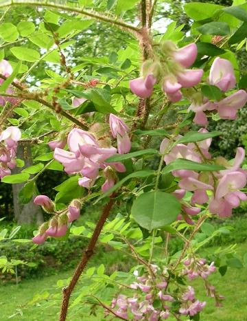
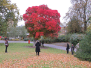

The criteria used by councils, or charities, when selecting trees to plant often fails to include their usefulness to pollinators. Yet pollinators, especially bees, require forage from early spring through to late autumn, and native trees, including hazel, alder and pussy willow can provide early sources of pollen when few plants are in flower. The advantage of planting native wild flowering trees is that the larvae of many native butterflies and moths rely on tree foliage. However, there are some late flowering non native trees, such as Chinese privet, the bee-bee tree and loquat, which can provide a valuable source of autumn nectar. So it is important that a proportion of non natives as well as natives, are included in a selection of pollinator-friendly trees. If street trees are planted close to community gardens, urban farms, parks and other open green areas, then habitat can be created in those spaces for wild bumblebees and solitary bees, generating pollination streams or 'eddies' between street and garden, farm or park. Trails or 'rivers' of insect pollinated street trees can link these areas of urban forage with one another enabling flying insects to negotiate a less hazardous and a more nutritiously rewarding path through urban areas. |
|
Trees flowering in February |
||
Acacia dealbata silver wattle |
Alnus glutinosa common alder |
Prunus x Subhirtelia ‘Autumnalis’ Winter flowering Cherry |
Salix caprea Pussy/goat willow |
Prunus mume Japanese apricot |
|
Trees flowering in March |
||
 Corylus avellana ‘common’ Hazel |
Corylus maxima Kentish Cob Hazel Kentish Cob |
 Prunus incam Okame Cherry 'Okame' |
 Prunus cerasifera Cherry Plum |
Prunus domestica Common Plum |
|
Trees flowering in April |
||
Acer campestre Field Maple |
 Amelanchier lamarckii Juneberry |
|
|
Liquidambar styraciflua Sweet gum |
Malus sylvestris Crab apple |
|
Prunus avium wild cherry |
Pyrus communis European Pear |
|
Trees flowering in May |
||
Acer pseudoplatanuis Sycamore |
Aesculus hippocastanum Horse chestnut |
Crataegus monogyna Hawthorns |
Halesia carolina Snow drop tree |
 Elaeagnus umbellata Autumn olive |
Sorbus aucuparia Rowan |
 Cercis siliquastrum Judus Tree |
Sorbus aria Common whitebeam |
 Ilex aquifolium Holly |
Mespilus germanica Medlar fruit |
||
| Trees flowering in Feb, March, April, May, June, July, Aug, Sept, Oct | ||
Trees flowering in June |
||
 Tilia europaea Common Lime |
 Ptelea trifoliata Hop tree |
 Robinia pseudoacacia False acacia |
|  Robinia hispida Rose Acacia |
Liriodendron tulipifera Tulip Tree |
|
| Trees flowering in Feb, March, April, May, June, July, Aug, Sept, Oct | ||
Trees flowering in July |
||
Castanea sativa Sweet chestnut |
Aesculus indica Indian horse chestnut |
Tilia platyphyllos broad leaved Lime |
Albizia julibrissin Persian silk tree |
 Cotinus obovatus American smokewood |
Ligustrum vulgare Privet tree |
| Trees flowering in Feb, March, April, May, June, July, Aug, Sept, Oct | ||
Trees flowering in August |
||
 Catalpa bignonioides Indian bean tree |
Eucryphia glutinosa Brush bush/Nirrhe |
Koelreuteria paniculata Golden rain |
 Hibiscus syriacus Hibiscus |
Aesculus parviflora Dwarf horse chestnut or Bottlebrush buckeye |
× Chitalpa tashkentensis Hybrid of the Indian Bean tree and the Desert Willow |
| Trees flowering in Feb, March, April, May, June, July, Aug, Sept, Oct | ||
Trees flowering in September |
||
 Sophora japonica Pagoda tree |
Tetradium daniellii Bee-bee tree |
 Ligustrum lucidum Chinese privet |
 Clerodendrum-trichotomum Harlequin glorybower |
|
Lagerstroemia indica Crape myrtle |
| Trees flowering in Feb, March, April, May, June, July, Aug, Sept, Oct | ||
Trees flowering in October |
||
Eriobotrya japonica Loquat tree |
Arbutus unedo Strawberry tree |
 Vitex agnus-castus Chaste tree |
| Trees flowering in Feb, March, April, May, June, July, Aug, Sept, Oct | ||
Plants for Bees and other pollinators |
||
Trees for Bees and other pollinators |
||